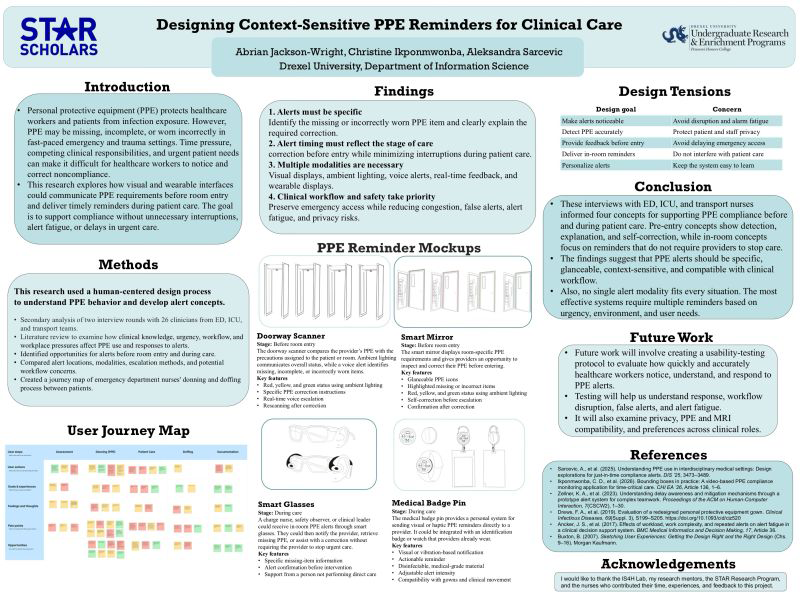
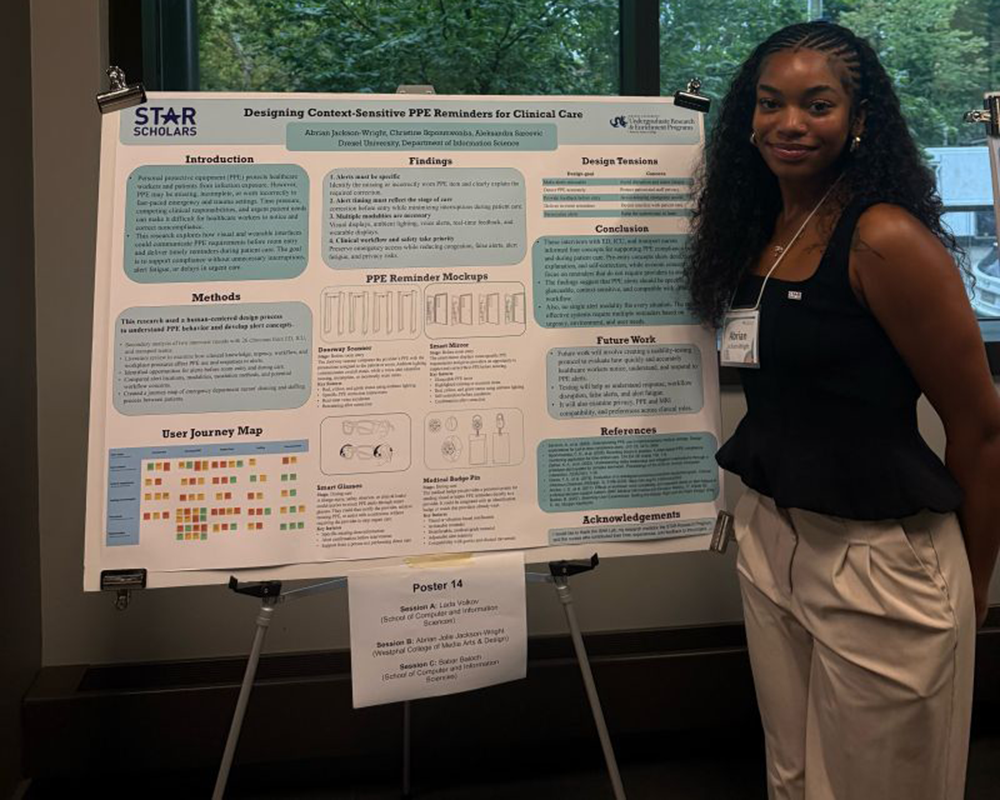

Research and Experience
Here are some of the research projects I've worked on:
-
Current Project: Drexel STAR Scholars Research Intern
June 2026 to August 2026
- Researched and designed a physical PPE reminder system to improve compliance and reduce infection risks in emergency and trauma settings
- Analyzed nurse interviews and clinical workflows to identify how workplace pressures, patient-care needs, and PPE processes affect responses to safety alerts
- Designed clear, timely, and context-sensitive reminders, including pre-entry and wearable concepts, to identify PPE noncompliance while minimizing disruptions to patient care


-
Intern at International Business Machines Corporation (IBM)
August 2024 to May 2025
- Conducted quantitative data analysis to support UX research and inform design decisions, leading to more user-centered product improvements
- Collaborated with cross-functional teams to enhance UX research outcomes, improving communication in research
- Conducted informational interviews with UX professionals to understand industry workflows and best practices gaining insights that informed personal design approach and research methods
-
User Experience Design Summer Intern at NYU Tandon
July 2024 to July 2024
- Designed a mobile app prototype that helps consumers discover local events, utilizing user research, resulting in a user- informed solution tailored to community needs
- Collaborated with a team to refine and develop each others app concepts practicing teamwork and iterative design skills
- Gained hands-on experience with Figma and Illustrator for prototype development, building foundational skills in design
-
Roberts Family Development Center Teacher
May 2025 to July 2025
- Designed and facilitated a creative learning environment where children explored digital design through online platforms increasing student engagement
- Introduced foundational computer skills, including keyboard shortcuts, and provided beginner instruction in Figma improving students digital literacy and technical skills
- Collaborated with fellow educators to develop daily lesson plans and create engaging activities resulting in a more interactive and inclusive classroom environment